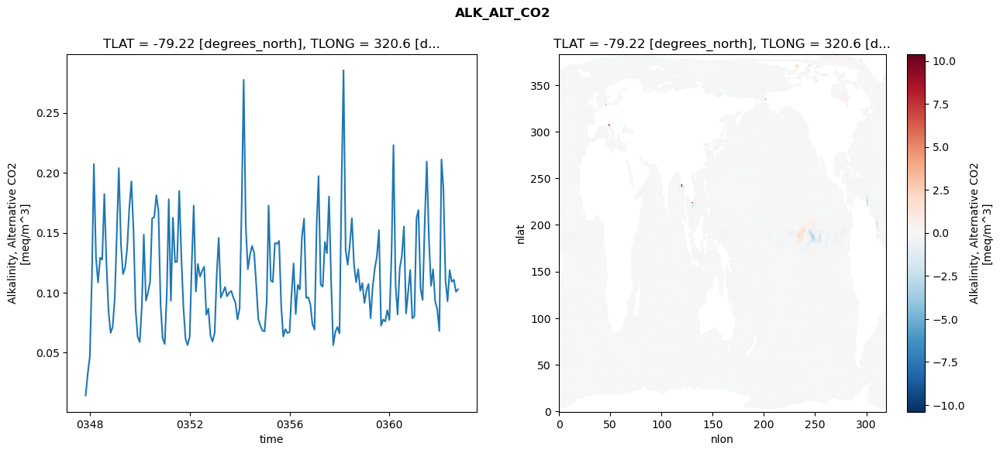
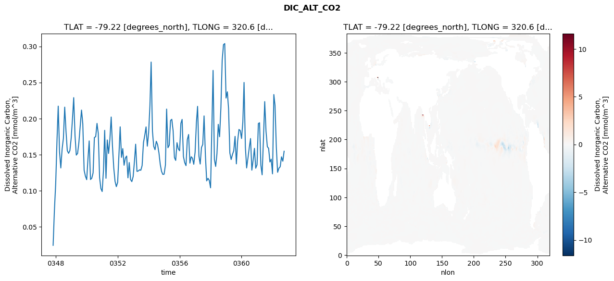
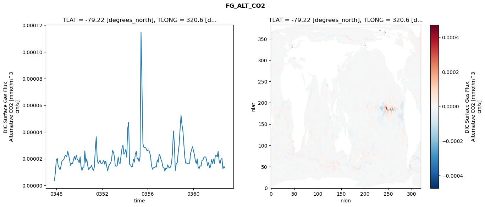
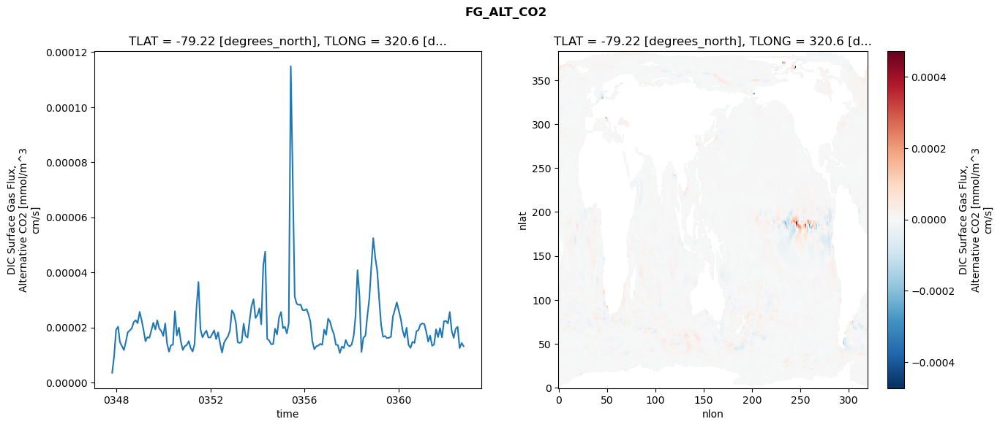
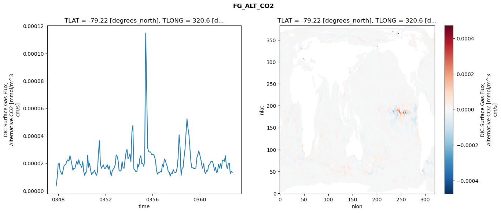

glb-dor_North_Atlantic_basin_005_1999-10-01_00023#
Simulation details#
Case: smyle.cdr-atlas-v0.glb-dor_North_Atlantic_basin_005_1999-10-01_00023.001
Basin: North_Atlantic_basin
Polygon: 5.0
Start date: 1999-10
Show code cell source Hide code cell source
import xarray as xr
import matplotlib.pyplot as plt
Show code cell source Hide code cell source
zarr_store = "/path/to/zarr/store"
# Parameters
zarr_store = "/global/cfs/projectdirs/m4746/Projects/Ocean-CDR-Atlas-v0/data/validation/smyle.cdr-atlas-v0.glb-dor_North_Atlantic_basin_005_1999-10-01_00023.001.validation.zarr"
Show code cell source Hide code cell source
%%time
ds_o = xr.open_zarr(zarr_store).compute()
ds_o
CPU times: user 744 ms, sys: 460 ms, total: 1.2 s
Wall time: 1.55 s
<xarray.Dataset> Size: 2MB
Dimensions: (nlat: 384, nlon: 320, time: 180)
Coordinates:
TLAT float64 8B -79.22
TLONG float64 8B 320.6
ULAT float64 8B -78.95
ULONG float64 8B 321.1
* time (time) object 1kB 0347-11-01 00:00:00 ... 0362-10-01 0...
z_t float32 4B 500.0
Dimensions without coordinates: nlat, nlon
Data variables:
ALK_ALT_CO2_diff (nlat, nlon) float32 492kB nan nan nan ... nan nan nan
ALK_ALT_CO2_rmse (time) float64 1kB 0.01428 0.03208 ... 0.1008 0.1029
DIC_ALT_CO2_diff (nlat, nlon) float32 492kB nan nan nan ... nan nan nan
DIC_ALT_CO2_rmse (time) float64 1kB 0.02418 0.07216 ... 0.1408 0.1546
ECOSYS_IFRAC_diff (nlat, nlon) float32 492kB nan nan nan ... nan nan nan
ECOSYS_IFRAC_rmse (time) float64 1kB 0.0002059 0.0003193 ... 0.0004425
FG_ALT_CO2_diff (nlat, nlon) float32 492kB nan nan nan ... nan nan nan
FG_ALT_CO2_rmse (time) float64 1kB 3.516e-06 9.467e-06 ... 1.318e-05xarray.Dataset
- nlat: 384
- nlon: 320
- time: 180
- TLAT()float64-79.22
- long_name :
- array of t-grid latitudes
- units :
- degrees_north
array(-79.22052261)
- TLONG()float64320.6
- long_name :
- array of t-grid longitudes
- units :
- degrees_east
array(320.56250892)
- ULAT()float64-78.95
- long_name :
- array of u-grid latitudes
- units :
- degrees_north
array(-78.95289509)
- ULONG()float64321.1
- long_name :
- array of u-grid longitudes
- units :
- degrees_east
array(321.12500894)
- time(time)object0347-11-01 00:00:00 ... 0362-10-...
- bounds :
- time_bound
- long_name :
- time
array([cftime.DatetimeNoLeap(347, 11, 1, 0, 0, 0, 0, has_year_zero=True), cftime.DatetimeNoLeap(347, 12, 1, 0, 0, 0, 0, has_year_zero=True), cftime.DatetimeNoLeap(348, 1, 1, 0, 0, 0, 0, has_year_zero=True), cftime.DatetimeNoLeap(348, 2, 1, 0, 0, 0, 0, has_year_zero=True), cftime.DatetimeNoLeap(348, 3, 1, 0, 0, 0, 0, has_year_zero=True), cftime.DatetimeNoLeap(348, 4, 1, 0, 0, 0, 0, has_year_zero=True), cftime.DatetimeNoLeap(348, 5, 1, 0, 0, 0, 0, has_year_zero=True), cftime.DatetimeNoLeap(348, 6, 1, 0, 0, 0, 0, has_year_zero=True), cftime.DatetimeNoLeap(348, 7, 1, 0, 0, 0, 0, has_year_zero=True), cftime.DatetimeNoLeap(348, 8, 1, 0, 0, 0, 0, has_year_zero=True), cftime.DatetimeNoLeap(348, 9, 1, 0, 0, 0, 0, has_year_zero=True), cftime.DatetimeNoLeap(348, 10, 1, 0, 0, 0, 0, has_year_zero=True), cftime.DatetimeNoLeap(348, 11, 1, 0, 0, 0, 0, has_year_zero=True), cftime.DatetimeNoLeap(348, 12, 1, 0, 0, 0, 0, has_year_zero=True), cftime.DatetimeNoLeap(349, 1, 1, 0, 0, 0, 0, has_year_zero=True), cftime.DatetimeNoLeap(349, 2, 1, 0, 0, 0, 0, has_year_zero=True), cftime.DatetimeNoLeap(349, 3, 1, 0, 0, 0, 0, has_year_zero=True), cftime.DatetimeNoLeap(349, 4, 1, 0, 0, 0, 0, has_year_zero=True), cftime.DatetimeNoLeap(349, 5, 1, 0, 0, 0, 0, has_year_zero=True), cftime.DatetimeNoLeap(349, 6, 1, 0, 0, 0, 0, has_year_zero=True), cftime.DatetimeNoLeap(349, 7, 1, 0, 0, 0, 0, has_year_zero=True), cftime.DatetimeNoLeap(349, 8, 1, 0, 0, 0, 0, has_year_zero=True), cftime.DatetimeNoLeap(349, 9, 1, 0, 0, 0, 0, has_year_zero=True), cftime.DatetimeNoLeap(349, 10, 1, 0, 0, 0, 0, has_year_zero=True), cftime.DatetimeNoLeap(349, 11, 1, 0, 0, 0, 0, has_year_zero=True), cftime.DatetimeNoLeap(349, 12, 1, 0, 0, 0, 0, has_year_zero=True), cftime.DatetimeNoLeap(350, 1, 1, 0, 0, 0, 0, has_year_zero=True), cftime.DatetimeNoLeap(350, 2, 1, 0, 0, 0, 0, has_year_zero=True), cftime.DatetimeNoLeap(350, 3, 1, 0, 0, 0, 0, has_year_zero=True), cftime.DatetimeNoLeap(350, 4, 1, 0, 0, 0, 0, has_year_zero=True), cftime.DatetimeNoLeap(350, 5, 1, 0, 0, 0, 0, has_year_zero=True), cftime.DatetimeNoLeap(350, 6, 1, 0, 0, 0, 0, has_year_zero=True), cftime.DatetimeNoLeap(350, 7, 1, 0, 0, 0, 0, has_year_zero=True), cftime.DatetimeNoLeap(350, 8, 1, 0, 0, 0, 0, has_year_zero=True), cftime.DatetimeNoLeap(350, 9, 1, 0, 0, 0, 0, has_year_zero=True), cftime.DatetimeNoLeap(350, 10, 1, 0, 0, 0, 0, has_year_zero=True), cftime.DatetimeNoLeap(350, 11, 1, 0, 0, 0, 0, has_year_zero=True), cftime.DatetimeNoLeap(350, 12, 1, 0, 0, 0, 0, has_year_zero=True), cftime.DatetimeNoLeap(351, 1, 1, 0, 0, 0, 0, has_year_zero=True), cftime.DatetimeNoLeap(351, 2, 1, 0, 0, 0, 0, has_year_zero=True), cftime.DatetimeNoLeap(351, 3, 1, 0, 0, 0, 0, has_year_zero=True), cftime.DatetimeNoLeap(351, 4, 1, 0, 0, 0, 0, has_year_zero=True), cftime.DatetimeNoLeap(351, 5, 1, 0, 0, 0, 0, has_year_zero=True), cftime.DatetimeNoLeap(351, 6, 1, 0, 0, 0, 0, has_year_zero=True), cftime.DatetimeNoLeap(351, 7, 1, 0, 0, 0, 0, has_year_zero=True), cftime.DatetimeNoLeap(351, 8, 1, 0, 0, 0, 0, has_year_zero=True), cftime.DatetimeNoLeap(351, 9, 1, 0, 0, 0, 0, has_year_zero=True), cftime.DatetimeNoLeap(351, 10, 1, 0, 0, 0, 0, has_year_zero=True), cftime.DatetimeNoLeap(351, 11, 1, 0, 0, 0, 0, has_year_zero=True), cftime.DatetimeNoLeap(351, 12, 1, 0, 0, 0, 0, has_year_zero=True), cftime.DatetimeNoLeap(352, 1, 1, 0, 0, 0, 0, has_year_zero=True), cftime.DatetimeNoLeap(352, 2, 1, 0, 0, 0, 0, has_year_zero=True), cftime.DatetimeNoLeap(352, 3, 1, 0, 0, 0, 0, has_year_zero=True), cftime.DatetimeNoLeap(352, 4, 1, 0, 0, 0, 0, has_year_zero=True), cftime.DatetimeNoLeap(352, 5, 1, 0, 0, 0, 0, has_year_zero=True), cftime.DatetimeNoLeap(352, 6, 1, 0, 0, 0, 0, has_year_zero=True), cftime.DatetimeNoLeap(352, 7, 1, 0, 0, 0, 0, has_year_zero=True), cftime.DatetimeNoLeap(352, 8, 1, 0, 0, 0, 0, has_year_zero=True), cftime.DatetimeNoLeap(352, 9, 1, 0, 0, 0, 0, has_year_zero=True), cftime.DatetimeNoLeap(352, 10, 1, 0, 0, 0, 0, has_year_zero=True), cftime.DatetimeNoLeap(352, 11, 1, 0, 0, 0, 0, has_year_zero=True), cftime.DatetimeNoLeap(352, 12, 1, 0, 0, 0, 0, has_year_zero=True), cftime.DatetimeNoLeap(353, 1, 1, 0, 0, 0, 0, has_year_zero=True), cftime.DatetimeNoLeap(353, 2, 1, 0, 0, 0, 0, has_year_zero=True), cftime.DatetimeNoLeap(353, 3, 1, 0, 0, 0, 0, has_year_zero=True), cftime.DatetimeNoLeap(353, 4, 1, 0, 0, 0, 0, has_year_zero=True), cftime.DatetimeNoLeap(353, 5, 1, 0, 0, 0, 0, has_year_zero=True), cftime.DatetimeNoLeap(353, 6, 1, 0, 0, 0, 0, has_year_zero=True), cftime.DatetimeNoLeap(353, 7, 1, 0, 0, 0, 0, has_year_zero=True), cftime.DatetimeNoLeap(353, 8, 1, 0, 0, 0, 0, has_year_zero=True), cftime.DatetimeNoLeap(353, 9, 1, 0, 0, 0, 0, has_year_zero=True), cftime.DatetimeNoLeap(353, 10, 1, 0, 0, 0, 0, has_year_zero=True), cftime.DatetimeNoLeap(353, 11, 1, 0, 0, 0, 0, has_year_zero=True), cftime.DatetimeNoLeap(353, 12, 1, 0, 0, 0, 0, has_year_zero=True), cftime.DatetimeNoLeap(354, 1, 1, 0, 0, 0, 0, has_year_zero=True), cftime.DatetimeNoLeap(354, 2, 1, 0, 0, 0, 0, has_year_zero=True), cftime.DatetimeNoLeap(354, 3, 1, 0, 0, 0, 0, has_year_zero=True), cftime.DatetimeNoLeap(354, 4, 1, 0, 0, 0, 0, has_year_zero=True), cftime.DatetimeNoLeap(354, 5, 1, 0, 0, 0, 0, has_year_zero=True), cftime.DatetimeNoLeap(354, 6, 1, 0, 0, 0, 0, has_year_zero=True), cftime.DatetimeNoLeap(354, 7, 1, 0, 0, 0, 0, has_year_zero=True), cftime.DatetimeNoLeap(354, 8, 1, 0, 0, 0, 0, has_year_zero=True), cftime.DatetimeNoLeap(354, 9, 1, 0, 0, 0, 0, has_year_zero=True), cftime.DatetimeNoLeap(354, 10, 1, 0, 0, 0, 0, has_year_zero=True), cftime.DatetimeNoLeap(354, 11, 1, 0, 0, 0, 0, has_year_zero=True), cftime.DatetimeNoLeap(354, 12, 1, 0, 0, 0, 0, has_year_zero=True), cftime.DatetimeNoLeap(355, 1, 1, 0, 0, 0, 0, has_year_zero=True), cftime.DatetimeNoLeap(355, 2, 1, 0, 0, 0, 0, has_year_zero=True), cftime.DatetimeNoLeap(355, 3, 1, 0, 0, 0, 0, has_year_zero=True), cftime.DatetimeNoLeap(355, 4, 1, 0, 0, 0, 0, has_year_zero=True), cftime.DatetimeNoLeap(355, 5, 1, 0, 0, 0, 0, has_year_zero=True), cftime.DatetimeNoLeap(355, 6, 1, 0, 0, 0, 0, has_year_zero=True), cftime.DatetimeNoLeap(355, 7, 1, 0, 0, 0, 0, has_year_zero=True), cftime.DatetimeNoLeap(355, 8, 1, 0, 0, 0, 0, has_year_zero=True), cftime.DatetimeNoLeap(355, 9, 1, 0, 0, 0, 0, has_year_zero=True), cftime.DatetimeNoLeap(355, 10, 1, 0, 0, 0, 0, has_year_zero=True), cftime.DatetimeNoLeap(355, 11, 1, 0, 0, 0, 0, has_year_zero=True), cftime.DatetimeNoLeap(355, 12, 1, 0, 0, 0, 0, has_year_zero=True), cftime.DatetimeNoLeap(356, 1, 1, 0, 0, 0, 0, has_year_zero=True), cftime.DatetimeNoLeap(356, 2, 1, 0, 0, 0, 0, has_year_zero=True), cftime.DatetimeNoLeap(356, 3, 1, 0, 0, 0, 0, has_year_zero=True), cftime.DatetimeNoLeap(356, 4, 1, 0, 0, 0, 0, has_year_zero=True), cftime.DatetimeNoLeap(356, 5, 1, 0, 0, 0, 0, has_year_zero=True), cftime.DatetimeNoLeap(356, 6, 1, 0, 0, 0, 0, has_year_zero=True), cftime.DatetimeNoLeap(356, 7, 1, 0, 0, 0, 0, has_year_zero=True), cftime.DatetimeNoLeap(356, 8, 1, 0, 0, 0, 0, has_year_zero=True), cftime.DatetimeNoLeap(356, 9, 1, 0, 0, 0, 0, has_year_zero=True), cftime.DatetimeNoLeap(356, 10, 1, 0, 0, 0, 0, has_year_zero=True), cftime.DatetimeNoLeap(356, 11, 1, 0, 0, 0, 0, has_year_zero=True), cftime.DatetimeNoLeap(356, 12, 1, 0, 0, 0, 0, has_year_zero=True), cftime.DatetimeNoLeap(357, 1, 1, 0, 0, 0, 0, has_year_zero=True), cftime.DatetimeNoLeap(357, 2, 1, 0, 0, 0, 0, has_year_zero=True), cftime.DatetimeNoLeap(357, 3, 1, 0, 0, 0, 0, has_year_zero=True), cftime.DatetimeNoLeap(357, 4, 1, 0, 0, 0, 0, has_year_zero=True), cftime.DatetimeNoLeap(357, 5, 1, 0, 0, 0, 0, has_year_zero=True), cftime.DatetimeNoLeap(357, 6, 1, 0, 0, 0, 0, has_year_zero=True), cftime.DatetimeNoLeap(357, 7, 1, 0, 0, 0, 0, has_year_zero=True), cftime.DatetimeNoLeap(357, 8, 1, 0, 0, 0, 0, has_year_zero=True), cftime.DatetimeNoLeap(357, 9, 1, 0, 0, 0, 0, has_year_zero=True), cftime.DatetimeNoLeap(357, 10, 1, 0, 0, 0, 0, has_year_zero=True), cftime.DatetimeNoLeap(357, 11, 1, 0, 0, 0, 0, has_year_zero=True), cftime.DatetimeNoLeap(357, 12, 1, 0, 0, 0, 0, has_year_zero=True), cftime.DatetimeNoLeap(358, 1, 1, 0, 0, 0, 0, has_year_zero=True), cftime.DatetimeNoLeap(358, 2, 1, 0, 0, 0, 0, has_year_zero=True), cftime.DatetimeNoLeap(358, 3, 1, 0, 0, 0, 0, has_year_zero=True), cftime.DatetimeNoLeap(358, 4, 1, 0, 0, 0, 0, has_year_zero=True), cftime.DatetimeNoLeap(358, 5, 1, 0, 0, 0, 0, has_year_zero=True), cftime.DatetimeNoLeap(358, 6, 1, 0, 0, 0, 0, has_year_zero=True), cftime.DatetimeNoLeap(358, 7, 1, 0, 0, 0, 0, has_year_zero=True), cftime.DatetimeNoLeap(358, 8, 1, 0, 0, 0, 0, has_year_zero=True), cftime.DatetimeNoLeap(358, 9, 1, 0, 0, 0, 0, has_year_zero=True), cftime.DatetimeNoLeap(358, 10, 1, 0, 0, 0, 0, has_year_zero=True), cftime.DatetimeNoLeap(358, 11, 1, 0, 0, 0, 0, has_year_zero=True), cftime.DatetimeNoLeap(358, 12, 1, 0, 0, 0, 0, has_year_zero=True), cftime.DatetimeNoLeap(359, 1, 1, 0, 0, 0, 0, has_year_zero=True), cftime.DatetimeNoLeap(359, 2, 1, 0, 0, 0, 0, has_year_zero=True), cftime.DatetimeNoLeap(359, 3, 1, 0, 0, 0, 0, has_year_zero=True), cftime.DatetimeNoLeap(359, 4, 1, 0, 0, 0, 0, has_year_zero=True), cftime.DatetimeNoLeap(359, 5, 1, 0, 0, 0, 0, has_year_zero=True), cftime.DatetimeNoLeap(359, 6, 1, 0, 0, 0, 0, has_year_zero=True), cftime.DatetimeNoLeap(359, 7, 1, 0, 0, 0, 0, has_year_zero=True), cftime.DatetimeNoLeap(359, 8, 1, 0, 0, 0, 0, has_year_zero=True), cftime.DatetimeNoLeap(359, 9, 1, 0, 0, 0, 0, has_year_zero=True), cftime.DatetimeNoLeap(359, 10, 1, 0, 0, 0, 0, has_year_zero=True), cftime.DatetimeNoLeap(359, 11, 1, 0, 0, 0, 0, has_year_zero=True), cftime.DatetimeNoLeap(359, 12, 1, 0, 0, 0, 0, has_year_zero=True), cftime.DatetimeNoLeap(360, 1, 1, 0, 0, 0, 0, has_year_zero=True), cftime.DatetimeNoLeap(360, 2, 1, 0, 0, 0, 0, has_year_zero=True), cftime.DatetimeNoLeap(360, 3, 1, 0, 0, 0, 0, has_year_zero=True), cftime.DatetimeNoLeap(360, 4, 1, 0, 0, 0, 0, has_year_zero=True), cftime.DatetimeNoLeap(360, 5, 1, 0, 0, 0, 0, has_year_zero=True), cftime.DatetimeNoLeap(360, 6, 1, 0, 0, 0, 0, has_year_zero=True), cftime.DatetimeNoLeap(360, 7, 1, 0, 0, 0, 0, has_year_zero=True), cftime.DatetimeNoLeap(360, 8, 1, 0, 0, 0, 0, has_year_zero=True), cftime.DatetimeNoLeap(360, 9, 1, 0, 0, 0, 0, has_year_zero=True), cftime.DatetimeNoLeap(360, 10, 1, 0, 0, 0, 0, has_year_zero=True), cftime.DatetimeNoLeap(360, 11, 1, 0, 0, 0, 0, has_year_zero=True), cftime.DatetimeNoLeap(360, 12, 1, 0, 0, 0, 0, has_year_zero=True), cftime.DatetimeNoLeap(361, 1, 1, 0, 0, 0, 0, has_year_zero=True), cftime.DatetimeNoLeap(361, 2, 1, 0, 0, 0, 0, has_year_zero=True), cftime.DatetimeNoLeap(361, 3, 1, 0, 0, 0, 0, has_year_zero=True), cftime.DatetimeNoLeap(361, 4, 1, 0, 0, 0, 0, has_year_zero=True), cftime.DatetimeNoLeap(361, 5, 1, 0, 0, 0, 0, has_year_zero=True), cftime.DatetimeNoLeap(361, 6, 1, 0, 0, 0, 0, has_year_zero=True), cftime.DatetimeNoLeap(361, 7, 1, 0, 0, 0, 0, has_year_zero=True), cftime.DatetimeNoLeap(361, 8, 1, 0, 0, 0, 0, has_year_zero=True), cftime.DatetimeNoLeap(361, 9, 1, 0, 0, 0, 0, has_year_zero=True), cftime.DatetimeNoLeap(361, 10, 1, 0, 0, 0, 0, has_year_zero=True), cftime.DatetimeNoLeap(361, 11, 1, 0, 0, 0, 0, has_year_zero=True), cftime.DatetimeNoLeap(361, 12, 1, 0, 0, 0, 0, has_year_zero=True), cftime.DatetimeNoLeap(362, 1, 1, 0, 0, 0, 0, has_year_zero=True), cftime.DatetimeNoLeap(362, 2, 1, 0, 0, 0, 0, has_year_zero=True), cftime.DatetimeNoLeap(362, 3, 1, 0, 0, 0, 0, has_year_zero=True), cftime.DatetimeNoLeap(362, 4, 1, 0, 0, 0, 0, has_year_zero=True), cftime.DatetimeNoLeap(362, 5, 1, 0, 0, 0, 0, has_year_zero=True), cftime.DatetimeNoLeap(362, 6, 1, 0, 0, 0, 0, has_year_zero=True), cftime.DatetimeNoLeap(362, 7, 1, 0, 0, 0, 0, has_year_zero=True), cftime.DatetimeNoLeap(362, 8, 1, 0, 0, 0, 0, has_year_zero=True), cftime.DatetimeNoLeap(362, 9, 1, 0, 0, 0, 0, has_year_zero=True), cftime.DatetimeNoLeap(362, 10, 1, 0, 0, 0, 0, has_year_zero=True)], dtype=object) - z_t()float32500.0
- long_name :
- depth from surface to midpoint of layer
- positive :
- down
- units :
- centimeters
- valid_max :
- 537500.0
- valid_min :
- 500.0
array(500., dtype=float32)
- ALK_ALT_CO2_diff(nlat, nlon)float32nan nan nan nan ... nan nan nan nan
- cell_methods :
- time: mean
- grid_loc :
- 3111
- long_name :
- Alkalinity, Alternative CO2
- units :
- meq/m^3
array([[ nan, nan, nan, ..., nan, nan, nan], [ nan, nan, nan, ..., nan, nan, nan], [0.18237305, 0.03125 , 0.00170898, ..., nan, nan, nan], ..., [ nan, nan, nan, ..., nan, nan, nan], [ nan, nan, nan, ..., nan, nan, nan], [ nan, nan, nan, ..., nan, nan, nan]], dtype=float32) - ALK_ALT_CO2_rmse(time)float640.01428 0.03208 ... 0.1008 0.1029
- cell_methods :
- time: mean
- grid_loc :
- 3111
- long_name :
- Alkalinity, Alternative CO2
- units :
- meq/m^3
array([0.01427643, 0.03208479, 0.04684555, 0.1147624 , 0.20724024, 0.12904513, 0.10853764, 0.12921775, 0.12759715, 0.18220223, 0.12449627, 0.08477287, 0.06653552, 0.07139628, 0.09607643, 0.15287727, 0.20392422, 0.14070704, 0.11549629, 0.1208681 , 0.13728216, 0.17034773, 0.19287365, 0.15271469, 0.08601713, 0.06339163, 0.05877344, 0.0893335 , 0.14849868, 0.09342687, 0.0998522 , 0.10906061, 0.16203684, 0.163029 , 0.18124395, 0.16839303, 0.09073475, 0.06201149, 0.05725325, 0.10045511, 0.17788332, 0.09332392, 0.16248892, 0.12549863, 0.12586721, 0.18492572, 0.1299948 , 0.08796004, 0.06159568, 0.05628741, 0.06333299, 0.12570574, 0.17261542, 0.10090053, 0.12388263, 0.11343136, 0.11811772, 0.12169878, 0.08164343, 0.08672544, 0.06403183, 0.05919202, 0.06647213, 0.11608552, 0.14570941, 0.0958909 , 0.09997086, 0.10473646, 0.09694388, 0.10007384, 0.10140958, 0.09589094, 0.09159629, 0.07768815, 0.08699949, 0.17646034, 0.27758579, 0.15550328, 0.11962484, 0.13134739, 0.13900682, 0.13328717, 0.10663441, 0.07794289, 0.07235285, 0.06832288, 0.0677493 , 0.09235579, 0.17268937, 0.11007585, 0.1088702 , 0.14142088, 0.14067866, 0.14313605, 0.0886437 , 0.06347526, 0.06958137, 0.06630595, 0.06723632, 0.10062873, 0.12437181, 0.08219155, 0.10655802, 0.1027196 , 0.14658081, 0.16168419, 0.09572302, 0.09609906, 0.09047838, 0.07394404, 0.06916058, 0.15620096, 0.19731116, 0.10664431, 0.10506032, 0.14227425, 0.13297198, 0.18032872, 0.10931528, 0.05629094, 0.06718151, 0.07140976, 0.06606579, 0.19244098, 0.28551909, 0.13530884, 0.12333072, 0.14029344, 0.16209374, 0.12335547, 0.10887125, 0.11951102, 0.10157351, 0.1080285 , 0.0914495 , 0.10222454, 0.10723558, 0.07865229, 0.10478861, 0.12014006, 0.1298128 , 0.15217331, 0.07248845, 0.07759661, 0.07610784, 0.08542459, 0.07720729, 0.13255198, 0.22308608, 0.1064642 , 0.08179404, 0.12057075, 0.13016278, 0.15514856, 0.08262357, 0.10026358, 0.11882492, 0.07863975, 0.08041497, 0.16228072, 0.16885687, 0.10344367, 0.09394901, 0.15805723, 0.20938723, 0.14543849, 0.10575253, 0.11945463, 0.09290226, 0.08620669, 0.06803646, 0.21116314, 0.18723731, 0.11006473, 0.09287478, 0.11882304, 0.10913317, 0.11080066, 0.10081922, 0.10286629]) - DIC_ALT_CO2_diff(nlat, nlon)float32nan nan nan nan ... nan nan nan nan
- cell_methods :
- time: mean
- grid_loc :
- 3111
- long_name :
- Dissolved Inorganic Carbon, Alternative CO2
- units :
- mmol/m^3
array([[ nan, nan, nan, ..., nan, nan, nan], [ nan, nan, nan, ..., nan, nan, nan], [ 0.15625 , 0.02172852, -0.01000977, ..., nan, nan, nan], ..., [ nan, nan, nan, ..., nan, nan, nan], [ nan, nan, nan, ..., nan, nan, nan], [ nan, nan, nan, ..., nan, nan, nan]], dtype=float32) - DIC_ALT_CO2_rmse(time)float640.02418 0.07216 ... 0.1408 0.1546
- cell_methods :
- time: mean
- grid_loc :
- 3111
- long_name :
- Dissolved Inorganic Carbon, Alternative CO2
- units :
- mmol/m^3
array([0.02418301, 0.07216473, 0.11018462, 0.17198724, 0.21718594, 0.15341829, 0.13149494, 0.15779208, 0.17256564, 0.21579694, 0.18224255, 0.15547541, 0.15175506, 0.15567098, 0.17337494, 0.20097711, 0.22894426, 0.17628619, 0.14931921, 0.15165374, 0.16649754, 0.18934582, 0.2116881 , 0.19275083, 0.12840677, 0.12025583, 0.11520694, 0.14505633, 0.16895982, 0.11539861, 0.11719541, 0.12466004, 0.1736789 , 0.17480327, 0.19322105, 0.17920018, 0.11818498, 0.10304892, 0.09875591, 0.12830106, 0.18361475, 0.11714691, 0.17026551, 0.15153258, 0.17085899, 0.20209867, 0.16143568, 0.13180159, 0.1128775 , 0.10555718, 0.11147136, 0.15102366, 0.18846031, 0.14612568, 0.15829068, 0.13523793, 0.14513811, 0.14799883, 0.1177327 , 0.13896863, 0.11549583, 0.11251521, 0.11953529, 0.14131037, 0.16438527, 0.12669091, 0.12720375, 0.12887215, 0.12824897, 0.13480485, 0.16640277, 0.17636169, 0.18838938, 0.16164801, 0.18029444, 0.21857428, 0.27826501, 0.18252166, 0.16147502, 0.1567508 , 0.16843111, 0.16361852, 0.15214959, 0.13659644, 0.12675554, 0.1225677 , 0.12279496, 0.13552289, 0.21310668, 0.159532 , 0.16279955, 0.19726389, 0.1989125 , 0.18285369, 0.14596108, 0.14192126, 0.16646218, 0.15806303, 0.15530955, 0.19339791, 0.19874474, 0.14730976, 0.1388484 , 0.13463977, 0.17063041, 0.17782402, 0.13815106, 0.14702411, 0.14490595, 0.13657442, 0.15332799, 0.19467449, 0.21683121, 0.14790354, 0.13688865, 0.15988759, 0.1640234 , 0.2036175 , 0.14954697, 0.11354035, 0.11706444, 0.11421505, 0.10395171, 0.19121983, 0.26670779, 0.14313927, 0.13357714, 0.15132691, 0.19188888, 0.17478378, 0.21479156, 0.28050934, 0.30238168, 0.3039047 , 0.2283949 , 0.23702634, 0.2135476 , 0.15216913, 0.14316352, 0.15016827, 0.15534342, 0.1752393 , 0.13711335, 0.16877434, 0.18483642, 0.18331763, 0.17227965, 0.19501293, 0.24998228, 0.1602796 , 0.13149321, 0.1452786 , 0.15943474, 0.17222021, 0.12840411, 0.14194824, 0.1586387 , 0.13110948, 0.13578469, 0.19301971, 0.19411136, 0.13529255, 0.12196991, 0.17054433, 0.22346793, 0.18249253, 0.16094512, 0.1586786 , 0.139721 , 0.14361742, 0.12330031, 0.23323527, 0.21831854, 0.16013909, 0.12540725, 0.13109197, 0.13314419, 0.14688683, 0.1408175 , 0.15463591]) - ECOSYS_IFRAC_diff(nlat, nlon)float32nan nan nan nan ... nan nan nan nan
- cell_methods :
- time: mean
- grid_loc :
- 2110
- long_name :
- Ice Fraction for ecosys fluxes
- units :
- fraction
array([[ nan, nan, nan, ..., nan, nan, nan], [ nan, nan, nan, ..., nan, nan, nan], [1.1324883e-06, 2.0265579e-06, 1.8715858e-05, ..., nan, nan, nan], ..., [ nan, nan, nan, ..., nan, nan, nan], [ nan, nan, nan, ..., nan, nan, nan], [ nan, nan, nan, ..., nan, nan, nan]], dtype=float32) - ECOSYS_IFRAC_rmse(time)float640.0002059 0.0003193 ... 0.0004425
- cell_methods :
- time: mean
- grid_loc :
- 2110
- long_name :
- Ice Fraction for ecosys fluxes
- units :
- fraction
array([0.00020587, 0.00031934, 0.00109381, 0.00140532, 0.00038954, 0.00046193, 0.00044446, 0.00036806, 0.00031148, 0.00068153, 0.0006495 , 0.00037633, 0.00042855, 0.0004501 , 0.00062307, 0.00094998, 0.00056935, 0.00059836, 0.00039498, 0.00036529, 0.00036533, 0.00063778, 0.00064957, 0.00039496, 0.00034039, 0.00037323, 0.00048905, 0.00079795, 0.00047047, 0.00055889, 0.0004102 , 0.00035842, 0.00056297, 0.00077262, 0.00054818, 0.00040829, 0.00050852, 0.00043102, 0.00053497, 0.00081352, 0.00116231, 0.00075858, 0.00046725, 0.00034672, 0.00039547, 0.00068786, 0.00049208, 0.00041972, 0.00041722, 0.00042394, 0.00085685, 0.0008839 , 0.00093783, 0.00067867, 0.00039498, 0.00030407, 0.00034959, 0.00081253, 0.00112341, 0.00069512, 0.00068253, 0.00064257, 0.00064345, 0.00139751, 0.0004149 , 0.00032498, 0.00044794, 0.00093409, 0.00055547, 0.00085159, 0.00053171, 0.00044937, 0.00065376, 0.00042484, 0.00057581, 0.00189249, 0.00119852, 0.00077414, 0.00067729, 0.00051596, 0.00090296, 0.00071982, 0.00062846, 0.0005641 , 0.00042419, 0.00036822, 0.00044319, 0.00064131, 0.00034587, 0.00044813, 0.00044135, 0.00051202, 0.00038087, 0.00071251, 0.00061574, 0.00047965, 0.00033092, 0.00051006, 0.00062198, 0.000799 , 0.00077202, 0.00059742, 0.00040599, 0.0004724 , 0.00056363, 0.00082104, 0.00054442, 0.00049611, 0.00042998, 0.00051927, 0.00059375, 0.0008921 , 0.00073571, 0.00055452, 0.00045867, 0.00042747, 0.00042482, 0.00068678, 0.00054333, 0.00064703, 0.00057476, 0.00047031, 0.00057528, 0.00074613, 0.00049727, 0.0004341 , 0.00036923, 0.00036415, 0.00060257, 0.00085749, 0.00038638, 0.00041527, 0.00041336, 0.00047885, 0.0003479 , 0.00061659, 0.00048709, 0.00036835, 0.00049694, 0.00036276, 0.00040048, 0.00074446, 0.00046187, 0.00043377, 0.00033582, 0.00039986, 0.0002857 , 0.00063033, 0.00043692, 0.00035965, 0.00035136, 0.00041644, 0.00054584, 0.0009308 , 0.00035967, 0.00039449, 0.00045386, 0.00046632, 0.00101823, 0.00080132, 0.00078115, 0.00053319, 0.00043135, 0.00026263, 0.00035789, 0.00090834, 0.00084478, 0.00064435, 0.00053957, 0.0004388 , 0.00039873, 0.00163968, 0.00200486, 0.00127068, 0.00063628, 0.00306492, 0.00226649, 0.00071373, 0.00056292, 0.00044249]) - FG_ALT_CO2_diff(nlat, nlon)float32nan nan nan nan ... nan nan nan nan
- cell_methods :
- time: mean
- grid_loc :
- 2110
- long_name :
- DIC Surface Gas Flux, Alternative CO2
- units :
- mmol/m^3 cm/s
array([[ nan, nan, nan, ..., nan, nan, nan], [ nan, nan, nan, ..., nan, nan, nan], [5.3662177e-09, 1.1837301e-08, 6.4550401e-09, ..., nan, nan, nan], ..., [ nan, nan, nan, ..., nan, nan, nan], [ nan, nan, nan, ..., nan, nan, nan], [ nan, nan, nan, ..., nan, nan, nan]], dtype=float32) - FG_ALT_CO2_rmse(time)float643.516e-06 9.467e-06 ... 1.318e-05
- cell_methods :
- time: mean
- grid_loc :
- 2110
- long_name :
- DIC Surface Gas Flux, Alternative CO2
- units :
- mmol/m^3 cm/s
array([3.51643719e-06, 9.46729433e-06, 1.91070685e-05, 2.02784705e-05, 1.46622663e-05, 1.32258851e-05, 1.17526748e-05, 1.47551164e-05, 1.82433479e-05, 1.88908350e-05, 1.96955604e-05, 2.18986048e-05, 2.26042667e-05, 2.15094277e-05, 2.56591431e-05, 2.25573971e-05, 1.91776875e-05, 1.49811819e-05, 1.64512701e-05, 1.62341002e-05, 1.88786528e-05, 2.16889680e-05, 1.92348807e-05, 2.25985984e-05, 1.95680158e-05, 1.87631735e-05, 1.68962484e-05, 2.14342808e-05, 1.41901517e-05, 1.11804544e-05, 1.35110069e-05, 1.37190124e-05, 2.58649277e-05, 1.70751632e-05, 1.99122419e-05, 1.48644982e-05, 1.17798816e-05, 1.31736988e-05, 1.36089383e-05, 1.50228931e-05, 1.25830125e-05, 1.12473141e-05, 1.38190238e-05, 2.73790540e-05, 3.64848061e-05, 1.93035626e-05, 1.63926569e-05, 1.77734301e-05, 1.88240144e-05, 1.63304240e-05, 1.63555488e-05, 1.76703884e-05, 1.89196475e-05, 1.57323303e-05, 1.82060779e-05, 1.41358330e-05, 1.08537467e-05, 1.43797452e-05, 1.57147558e-05, 1.67466504e-05, 1.89242534e-05, 2.61601223e-05, 2.49758012e-05, 2.15646012e-05, 1.45951175e-05, 1.43485927e-05, 1.47813459e-05, 2.13731905e-05, 1.69671240e-05, 1.63232875e-05, 2.24355285e-05, 2.77669401e-05, 3.02178213e-05, 2.33910975e-05, 2.45613690e-05, 2.69181974e-05, 2.11230239e-05, 4.25654247e-05, 4.74771328e-05, 1.58283163e-05, ... 2.48609441e-05, 2.20582490e-05, 1.49603962e-05, 1.20811555e-05, 1.31236385e-05, 1.34045893e-05, 1.40173202e-05, 1.36742373e-05, 1.91941357e-05, 1.73087137e-05, 2.31854363e-05, 2.20148187e-05, 1.94229265e-05, 1.75253506e-05, 1.37004069e-05, 1.35639882e-05, 1.06916511e-05, 1.30659763e-05, 1.24842930e-05, 1.54016448e-05, 1.36692721e-05, 1.30878249e-05, 1.38090682e-05, 1.70163817e-05, 2.39250389e-05, 4.07758624e-05, 3.16643133e-05, 1.10785679e-05, 1.62463592e-05, 1.69605732e-05, 2.43087329e-05, 3.04610422e-05, 4.22506721e-05, 5.24261627e-05, 4.53327859e-05, 4.04006395e-05, 3.08159046e-05, 2.10533482e-05, 1.65853599e-05, 1.68726656e-05, 1.61210567e-05, 1.62275304e-05, 1.65977874e-05, 2.39320350e-05, 2.64268812e-05, 2.90829041e-05, 2.59905709e-05, 2.30033284e-05, 1.88852037e-05, 1.63447844e-05, 1.98548724e-05, 1.36410925e-05, 1.25691923e-05, 1.47773713e-05, 1.43509487e-05, 1.86046663e-05, 1.90649671e-05, 2.10362275e-05, 2.14498908e-05, 2.11546729e-05, 1.85124511e-05, 1.48135021e-05, 1.70303659e-05, 1.33272704e-05, 1.37780066e-05, 1.92899773e-05, 1.64664421e-05, 1.97494348e-05, 1.63606516e-05, 2.21868777e-05, 2.23563833e-05, 2.14342476e-05, 2.55812519e-05, 1.86452651e-05, 1.61658061e-05, 1.95097711e-05, 2.02000357e-05, 1.24807889e-05, 1.43335832e-05, 1.31769034e-05])
- timePandasIndex
PandasIndex(CFTimeIndex([0347-11-01 00:00:00, 0347-12-01 00:00:00, 0348-01-01 00:00:00, 0348-02-01 00:00:00, 0348-03-01 00:00:00, 0348-04-01 00:00:00, 0348-05-01 00:00:00, 0348-06-01 00:00:00, 0348-07-01 00:00:00, 0348-08-01 00:00:00, ... 0362-01-01 00:00:00, 0362-02-01 00:00:00, 0362-03-01 00:00:00, 0362-04-01 00:00:00, 0362-05-01 00:00:00, 0362-06-01 00:00:00, 0362-07-01 00:00:00, 0362-08-01 00:00:00, 0362-09-01 00:00:00, 0362-10-01 00:00:00], dtype='object', length=180, calendar='noleap', freq='MS'))
Show code cell source Hide code cell source
variables = [v[:-5] for v in ds_o.variables if "_rmse" in v]
Show code cell source Hide code cell source
plt.rcParams.update({'figure.max_open_warning': 0})
for v in variables:
fig, axs = plt.subplots(1, 2, figsize=(15, 6))
ds_o[f"{v}_rmse"].plot(ax=axs[0])
ds_o[f"{v}_diff"].plot(ax=axs[1])
plt.suptitle(v, fontweight="bold")


 

